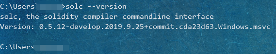
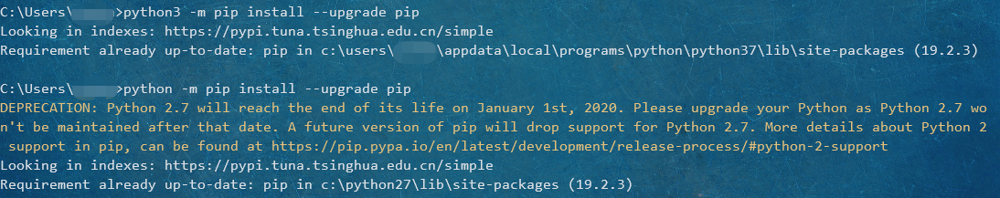

BlockChainIntroductionAdvanceSolidity安装Solidity编译器在线网页版本Linux环境Windows环境搭建IDE环境尝试搭建python2和python3共存问题注册Azure账号Read docIntroduction to Smart ContractsTypes Value TypesBooleansOperatorsIntegersOperatorsFixed Point NumbersOperatorsAddressType conversionsMembers of AddressesContract TypesFixed-size byte arraysOperatorsMembersDynamically-sized byte arrayAddress LiteralsRational and Integer LiteralsString Literals and Typesescape charactersHexadecimal LiteralsEnumsFunction TypesConversionsMembersReference TypesData locationData location and assignment behaviorArraysbytes and strings as ArraysAllocating Memory ArraysArray LiteralsArray MembersStructsMapping TypesConversions between Elementary TypesConversions between Literals and Elementary TypesReference
BlockChain
Introduction
EthFans 7 个步骤理解什么是区块链 区块链到底是什么鬼？为什么说区块链抗篡改？ 以太坊创始人 Vitalik 简介以太坊
Advance
Bitcoin: A Peer-to-Peer Electronic Cash System 比特币白皮书：一种点对点的电子现金系统 Vitalik Buterin：以太坊是什么 以太坊简介（注释版） 以太坊设计原理
Solidity
安装Solidity编译器
参考官方文档
在线网页版本
Linux环境
Windows下安装有点麻烦，要用到Visual Stduio 2017，选择在wsl里面先试试水。
输入下面三行代码即可获得稳定版本的环境：
xxxxxxxxxx31sudo add-apt-repository ppa:ethereum/ethereum2sudo apt-get update3sudo apt-get install solc
安装成功。
Windows环境
Linux环境搭起来挺简单的，尝试了一下Windows下的环境搭建。
克隆源代码
xxxxxxxxxx21git clone --recursive https://github.com/ethereum/solidity.git2cd solidity先决条件
打开Visual Studio Installer，对比所需安装的组件列表：
缺少Windows Universal CRT SDK，补上安装。
外部依赖
可以用一个脚本直接一键安装好所需的依赖
xxxxxxxxxx11scripts\install_deps.bat
命令行构建
xxxxxxxxxx31mkdir build2cd build3cmake -G "Visual Studio 16 2019" ..我的电脑上用的是Visual Studio 2019，所以命令和文档给出的有点不同。
报错：
xxxxxxxxxx31-- Could NOT find Z3 (missing: Z3_LIBRARY Z3_INCLUDE_DIR) (Required is at least version "4.6.0")2No SMT solver found (or it has been forcefully disabled). Optional SMT checking will not be available.3Please install Z3 or CVC4 or remove the option disabling them (USE_Z3, USE_CVC4).
在stackoverflow上发现同样的问题，未解决。
根据英文文档给出的方法，在安装路径下禁用Z3和CVC4。
xxxxxxxxxx21# disables both Z3 and CVC42cmake .. -DUSE_CVC4=OFF -DUSE_Z3=OFF2019.10.06 update: 其实，英文文档已经在前面给出了
z3和CVC4的下载链接
有没有z3和CVC4好像没有什么区别。。不管了，直接继续下一步。
xxxxxxxxxx11cmake --build . --config RelWithDebInfo大概几分钟后就完成了构建过程，也就是说，编译器安装好了。
测试
先找到solc.exe的路径，在D:\GitHub\solidity\build\solc\RelWithDebInfo下。
添加到环境变量，在终端里输入solc --version

得到回显，说明安装成功。
搭建IDE环境
尝试搭建
根据官方Guides，打算使用如下配置：
Vscode已有，需要安装一下Vscode的插件。
其中Azure Blockchain Workbench plugin中又需要：
用如下命令来查看是否满足要求
xxxxxxxxxx51winver2code --version3python2 --version4node --version5git --version下面给出相应链接：
xxxxxxxxxx41Vscode：https://code.visualstudio.com/2Python2: https://www.python.org/downloads/release/python-2716/3Node: https://nodejs.org/zh-cn/4Git: https://git-scm.com/或者在Vscode中激活扩展后，会有一个界面：
点击Install xxx去安装相应的软件即可。
python2和python3共存问题
参考CSDN上的一个解决方案。
安装python2，选择的版本是python2.7.16(64-bit)。
python2安装目录选择C:\Python27，在安装选项那里选择不添加进Path（自己手动来）。
电脑上本来是有python3的，命令行下python即可调用。但是一番尝试后发现，Vscode的扩展里要求的python2.7.15必须要用到python这个命令，会与python3冲突。
解决方案：
找到python3的路径C:\Users\yourname\AppData\Local\Programs\Python\Python37\，将其中的python.exe改名为python3.exe。
将目录C:\Python2.7添加到Path环境变量中，该目录下的东西一律不变。
这样，python命令就是调用python2；python3命令就是调用python3。
打开终端，检验一下：
但是把python3的名字改了以后，python3/scripts/目录下的东西就都运行不了，只能通过python3 -m xxx来运行。
pip也只能通过如下方式来调用：
python2的pip可以使用python2 -m pip install xxx来安装需要的库文件。
python3的pip可以直接使用python3 -m pip install xxx来安装需要的库文件。

注册Azure账号

通过这边去注册微软的Azure账号。
输入一些常用信息后，需要绑定信用卡，只有Visa和masterpass两个选项。
没外国的信用卡，GG。。。
后来了解到，如果用学生邮箱注册，就可以不用提供信用卡。
用国内某大学的校园邮箱注册，验证那边过不去，说什么不支持大专院校。。。
联系了一下在外读大学的初中同学，用他的校园邮箱注册通过了。
学生优惠，只提供每年100刀免费使用。但是这个Azure Blockchain Service的价格也太贵了。。最便宜的一个月都要大概50刀。
不搞了。。还是老老实实地用Remix吧。
Read doc
Introduction to Smart Contracts
A contract in the sense of Solidity is a collection of code (its functions) and data (its state) that resides at a specific address on the Ethereum blockchain.
contract = code(functions) + data(state)
Types
Value Types
Booleans
bool: true and false
Operators
!, &&, ||, ==, !=
Integers
int/uint: uint8 to uint256 in steps of 8, uint is aliase for uint256
Operators
- Comparisons:
<=, <, ==, !=, >=, >(evaluate tobool) - Bit operators:
&, |, ^, ~ - Shift operators:
<<, >> - Arithmetic operators:
+, -, (unary)-, *, /, %, **
Warning: Integers are restricted to a certain range. Not fit inside the range => be truncated (which can be unexpected).
uint256(0) - uint256(1) == 2**256 - 1, take these overflow into account.
Division rounds towards zero.
Modulo results in the same sign as its left operand (or zero).
Exponentiation is only available for unsigned types.
Fixed Point Numbers
Not fully supported by Solidity yet.
fixed/ufixed: Signed and unsigned fixed point number of various sizes.
Keywords ufixedMxN/fixedMxN.
Operators
- Comparisons:
<=, <, ==, !=, >=, >(evaluate tobool) - Arithmetic operators:
+, -, (unary)-, *, /, %
Fixed Point Numbers !== Floating Point Numbers (IEEE 754 numbers)
Address
address: Holds a 20 bytes value.address payable: Same asaddress, but havetransferandsendas additional members.
Idea behind: address payable is an address you can send Ether to, while a plain address cannot be sent Ether.
Type conversions
Yes: address payable => address
No: address => address payable
address(x) => type address payable, if x: integer, fixed bytes type, literal or a contract with a payable fallback function.
address(x) => type address, if x: a contract without payable fallback function.
这个address的类型转换有点复杂。。
Members of Addresses
balanceandtransfer
xxxxxxxxxx21address.balance2address.transfer(x)
The transfer function fails if the balance of the current contract is not large enough or if the Ether transfer iss rejected by the receiving account.
sendSend is the low-level counterpart oftransfer. If failing, will not stop with an exception, butsendwill returnfalse.
Warning: There are some dangers in using
send. Always check the return value ofsend, usetransferor even better: use a pattern where the recipient withdraws the money.
call,delegatecallandstaticcallAll take a singlebytes memoryparameter and return the success condition (as abool) and the returned memory (bytes memory).
xxxxxxxxxx31bytes memory payload = abi.encodeWithSignature("register(string)", "MyName");2(bool success, bytes memory returnData) = address(nameReg).call(payload);3require(success);
All three functions
call,delegatecallandstaticcallare very low-level functions and should only be used as a last resort as they break the type-safety of Solidity.
Contract Types
Every contract defines its own type. Contract can be explicitly converted to and from the address type.
The data representation of a contract is identical to that of the address type and this type is also used in the ABI.
Contracts do not support any operators.
The members of contract types: external functions of the contract + any state variable marked as public.
Fixed-size byte arrays
byte1, byte2, byte3, ..., byte32: hold a sequence of bytes.
byte == byte1.
Operators
- Comparisons:
<=, <, ==, !=, >=, >(evaluate tobool) - Bit operators:
&, |, ^, ~ - Shift operators:
<<, >> - Index access: If
xis of typebyteI, thenx[k]for0 <= k < Ireturns thekth byte (read-only).
Members
.length: yields the fixed length of the byte array (read-only).
Note: The type of
byte[]is an array of bytes which wastes 31 bytes of space. It is better to use thebytestype instead.
Dynamically-sized byte array
bytes: Dynamically-sized byte array. NOT A VALUE-TYPE!
string: Dynamically-sized UTF-8-encoded string. NOT A VALUE-TYPE!
Address Literals
Hexadecimal literals that pass the address checksum test, e.g. 0xdCad3a6d3569DF655070DEd06cb7A1b2Ccd1D3AF are of address payable type.
Rational and Integer Literals
Integer literals are formed from a sequence of numbers in the range 0-9, interpreted as decimal. Octal literals do not exist in Solidity and leading zeros are invalid. 69
Decimal fraction literals are formed by a . with at least one number on one side. 1., .1, 1.3.
Scientific notation is supported, where the base can have fractions, while the exponent cannot. 2e10, -2e10, 2e-10, 2.5e1.
Underscores can be used to separate the digits of a numeric literal to aid readability. 123_000, 0x2eff_abde, 1_2e345_678.
Number literal expressions retain arbitrary precision until they are converted to a non-literal type (i.e. by using them together with a non-literal expression or by explicit conversion).
Warning: Division on integer literals now converts into a rational number, i.e.
5/2is not2, but2.5.
Note: Solidity has a number literal type for each rational number.
String Literals and Types
String literals are written with either double or single-quotes ("foo" or "bar").
escape characters
\<newline>, \\, \', \", \b, \f, \n, \r, \t, \v, \xNN, \uNNNN
Any unicode line terminator which is not a newline (i.e. LF, VF, FF, CR, NEL, LS, PS) is considered to terminate the string literal. Newline only terminates the string literal if it is not preceded by a \.
Hexadecimal Literals
Hexadecimal literals are prefixed with the keyword hex and are enclosed in double or single quote. hex"001122FF".
Hexadecimal literals behave like string literals and have the same convertibility restrictions.
Enums
Enums are one way to create a user-defined type in Solidity. They are explicity convertible to and from all integer types but implicit conversion is not allowed. Enums require at least one member, and its default value when declared is the first member.
xxxxxxxxxx31enum ActionChoices { GoLeft, GoRight, GoStraight, SitStill }2ActionChoices choice;3ActionChoices constant defaultChoice = ActionChoices.GoStraight;Function Types
- internal functions: can only be called inside the current contract (current code units).
- external functions: consist of address + function signature.
Function types are notated as follows:
xxxxxxxxxx21function (<parameter types>) {internal|external} [pure|view|payable] [returns (<return types>)]2// state mutability: pure, view, payableBy default, function types are internal.
Visibility has to be specified explicitly for functions defined in contracts, they do not have a default.
Conversions
Yes: address(value of external function type) => type address
function type A (implicitly)=> function type B if and only if their parameter types, return types, internal/external property are identical and the state mutability of A is not more restrictive than the state mutability of B.
pure=>view,non-payableview=>non-payablepayable=>non-payable
no-payable function will reject Ether sent to it, non-payable functions cannot be converted to payable functions.
Public functions of the current contract can be used both as internal and as an external function.
- internal:
f - external:
this.f
Members
Public (or external) functions have the following members:
.selector: returns the ABI function selector..gas(uint): returns a callable function object which, when called, will send the specified amount of gas to the target function..value(uint): returns a callable function object which, when called, will send the specified amount of wei to the target function.
Lambda or inline functions are planned but not yet supported.
Reference Types
Currently, reference types comprise structs, arrays and mappings.
Always have to explicitly provide the data area where the type is stored: memory, storage or calldata.
Data location
Every reference type has an additional annotation, the "data location", about where it is stored.
calldata only for parameters of external functions and is required for this type of parameter. Non-modifiable, non-persistent.
Data location and assignment behavior
storage<=>memory: copymemory<=>memory: referencestorage=> local storage variable: reference- all other =>
storage: copy
Arrays
compile-time fixed size: T[k], or dynamic size: T[].
For example, an array of 5 dynamic arrays of uint: uint[][5].
.push(): append a new element at the end.
assign to .length: change the size.
bytes and strings as Arrays
Variables of type bytes and string are special arrays. string does not allow length or index access.
Should use bytes over byte[]. bytes and string for arbitrary-length, bytes1 to bytes32 otherwise.
Allocating Memory Arrays
Must use the new keyword to create arrays with a runtime-dependent length in memory.
Not possible to resize memory arrays.
Array Literals
An array literals is a comma-separated list of one or more expressions, enclosed in square brackets ([...]). For example [1, a, f(3)]. There must be a common type all elements can be implicitly converted to.
Array literals are always statically-sized memory arrays and (fixed-size memory arrays) cannot be assigned to dynamically-sized memory arrays.
It is planned to remove this restriction in the future.
Array Members
- length: contains the array's number of elements.
- push: appends an element at the end of the array.
- pop: remove an element from the end of the array.
Warning:
.length--on an empty array will cause an underflow and thus sets the length to2**256-1.
Structs
Solidity provides a way to define new types in the form of structs.
Mapping Types
Conversions between Elementary Types
Conversions between Literals and Elementary Types
Reference